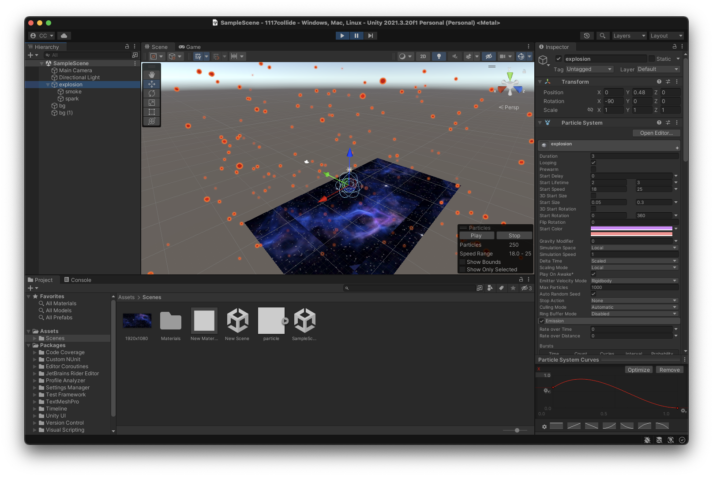

PROJECT 3 Colliding Space Junk - DOCUMENTATION
Ideation
I aspire to portray space debris in a distinct manner by opting for abstract shapes or symbols, steering away from conventional and realistic depictions. This intentional departure from the literal allows for a more imaginative and interpretative exploration of the cosmic landscape.
Features and Moment
[Moment 1] an array of dynamic flash
[Moment 2] a negative effect to create a visual strike
[Moment 3] a dark hue to imply a warning
[Moment 4] The tone to highlight the emotion and urgency
I aimed to craft a visually striking representation of the aftermath following the collision of space debris. To intensify the impact, I strategically employed an array of dynamic flash effects. The initial flickering, seamlessly woven into the film's opening moments, evolves into a powerful negative effect. This deliberate transition immerses the viewer in the sensation of a forceful impact, creating an immediate and visceral experience.
As the scene unfolds, the color palette undergoes a dramatic transformation. Shifting from vibrant flashes, the visual narrative transitions into a profound exploration of dark hues, dominated by intense red tones. This deliberate color scheme not only symbolizes the aftermath of the collision but also evokes a sense of urgency and heightened emotion. The juxtaposition of bright flashes and subsequent immersion into darker, more intense colors serves to enhance the viewer's emotional connection with the narrative, offering a visual journey that resonates beyond the screen.
Prototype

Raw Footage_Colliding
Colliding_Space Junk